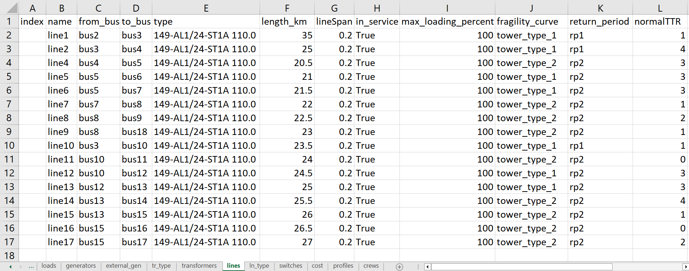

Grid Modeling
To understand the resiliency of a power grid, a power grid needs to be described as precise as possible. The structure of the network is based on the PandaPower Datastructure. Therefore, networks can be created as shown in PandaPowers Documentation. To make adjustments easier, reXplan uses the network.xlsx file, which can be found under ../reXplan/jupyter_notebooks/file/input/[simulationName].
Note
We are currently working on including more types of elements from PandaPower.
Modeling from Excel
Each sheet provides information for the type of element, each column for the elements specifications and each row for the number of elements, as showed here:
Important
Names in rows under fragility_curve and return_period column need to match the naming pattern in provided database.
Some columns are optional, others are necessary. Take the network file from Basic Example and the PandaPower Documentation for Datastructure as reference.
Modeling from Import
Note
Importing models from PandaPower is a work in progress
The network data can also be imported from PowerFactory via PandaPower with the model_port function, which imports all necessary data in the format of reXplan. Verifying dataset is advised. #TODO Link to function